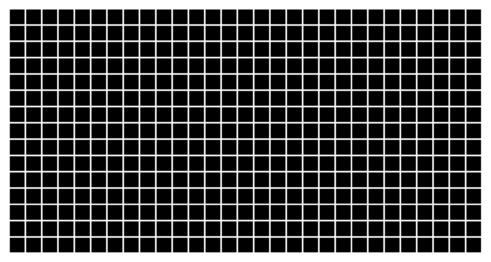
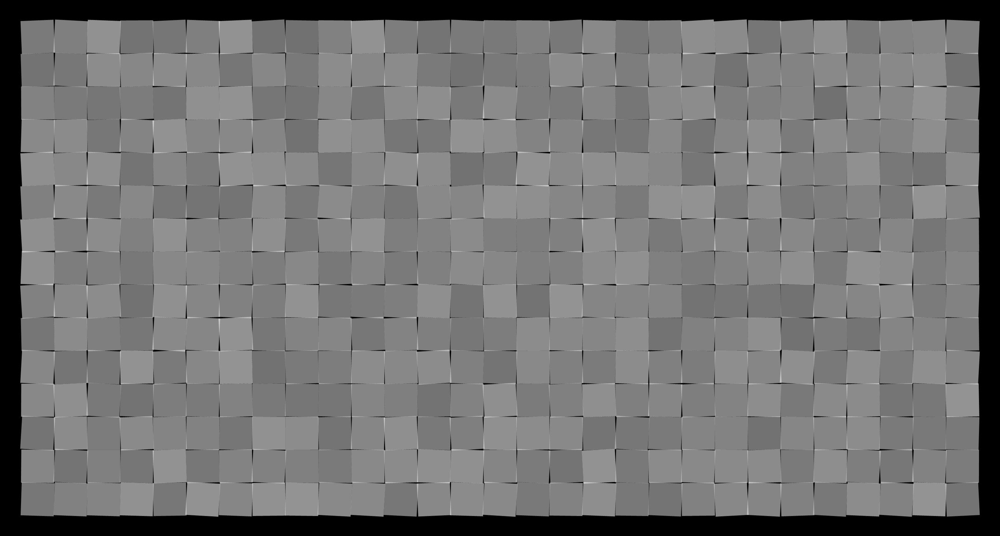
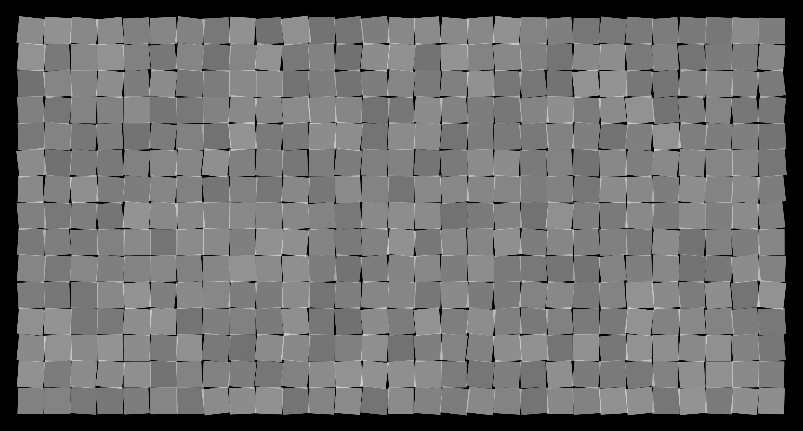
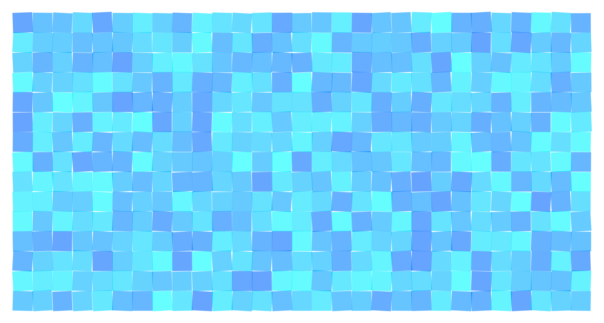
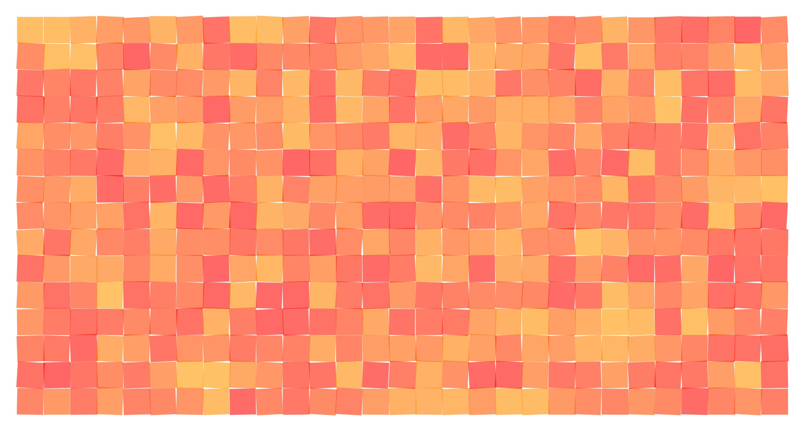
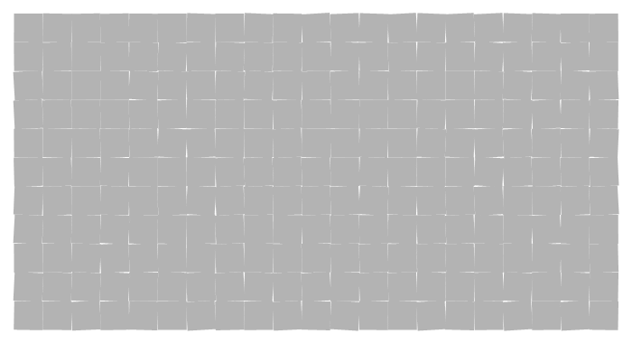

First posted on June 24, 2016 by fermibot
How has this been made? This is just a simple usage of rotation. There are several squares in the figure and they have been rotated. The code is very simple and is written below. You can paste that in mathematica to obtain the image that has been presented below it.
Graphics[
Table[
Rotate[{
Opacity[0.017],
Pink,
EdgeForm[{Thin, RandomChoice[{Green, Darker[Green], Lighter[Blue]}], Opacity[0.15]}],
Rectangle[{-r, -r}, {r, r}]}, r^2], {r, \[Pi], 10 \[Pi], \[Pi]/13}]]
The variables of the rectangle like the corners (size), the edge color are a function of the angle. The size
the of
the rectangle varies as a square of the angle. Other factors like the edge of the rectangle are random
between three
colors. For the randomization of the colors, the colors Dark Green, Green and Light Blue have been listed
and the
mathematica function called as RandomChoice has been applied on the list. So, for every rectangle, the color
will be
picked randomly. Randomness is important to give a natural feel to an object. It displays a sense of the
reality in
the sense that there are errors and the makes it feel more manual and humanly.
Applying Randomness to the size along with the color for the above image will give the following. The code
and the
image have been posted shown below
Graphics[
Table[
Rotate[{
Opacity[0.017],
Pink,
EdgeForm[{Thin, RandomChoice[{Green, Darker[Green], Lighter[Blue]}], Opacity[0.15]}],
Rectangle[{-r, -r}, {r, r}]}, r^2 + 1000 RandomReal[{1/r, -(1/r)}]], {r, \[Pi], 10 \[Pi], \[Pi]/13}]]
I was plotting some squares in the form of a rectangular array. The image is shown below.
Since each square in the array can be controlled for the position and the orientation, some modifications have been made and the following the different ideas obtained from it.
The rectangular array has been modified to assign randomness to the orientation of each one and also randomness in the color (The Gray Scale). The resultant looks like many post-it notes on the board.
The image above in the has been given an additional randomness in the position and the following is the result.
My favorite one is posted below and the rest of the colors are in sequence Red to Yellow to Green to Blue to Violet to Red
All the below colors might not be clear but it is just to show all the hues.
It might appear as if some lines are moving to and fro between the squares. But if you notice carefully, you can see that it is just the squares slightly rotating about their position.
{kind=link}
{kind=link}